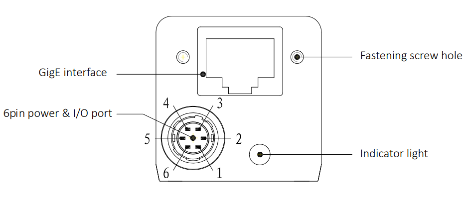
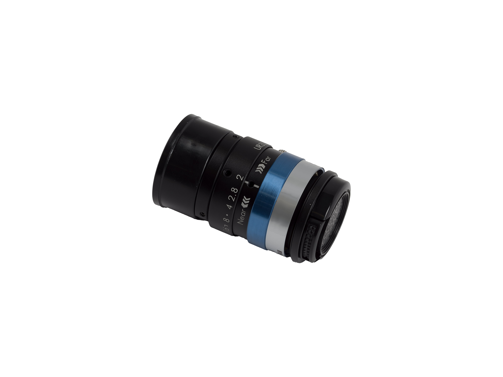
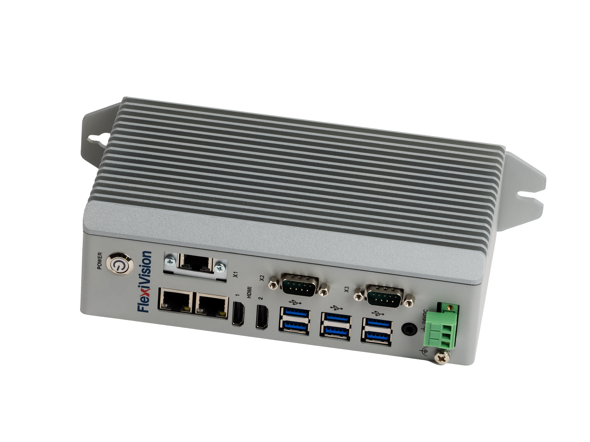
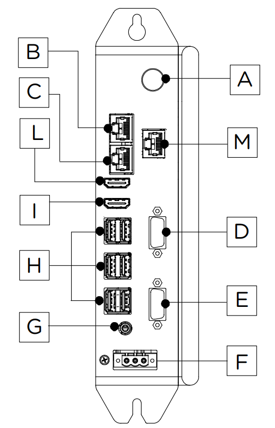
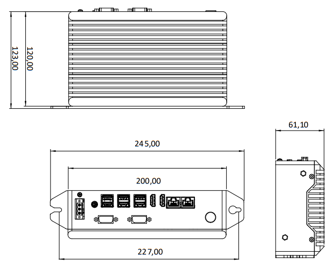
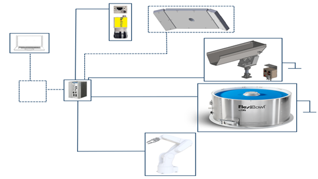

Specifiche Dettagliate FlexiVision#
Questa sezione fornisce le specifiche tecniche complete del sistema FlexiVision Easy, inclusi dettagli su camera industriale, VisionController, griglia di calibrazione, protocolli di comunicazione e configurazioni hardware.
Camera#

Il sistema FlexiVision utilizza telecamere ad alta risoluzione con interfaccia Gigabit Ethernet per garantire rapidità nell’acquisizione delle immagini e precisione nel riconoscimento dei componenti.
Specifiche elettriche#
Caratteristica |
Specifiche |
|---|---|
Modello |
CAM-CIC-5000-20G-1 |
Pixel Effettivi |
5 MP (2448 × 2048) |
SNR |
>38 dB |
Dynamic Range |
70 dB |
GPIO |
Connettore Hirose 6-pin: 1 ingresso opto-isolato, 1 uscita opto-isolata, 1 I/O configurabile |
Formato Immagine |
Mono8 / 10 / 10Packed |
Binning |
Support |
Gain |
X1 ~ X32 |
Gamma |
Da 0 a 4, supporto LUT |
Tempo di Esposizione |
34.23 μS ~ 1S |
Modalità Trigger |
Software / Hardware / Free run |
Buffer Immagine |
256 MB |
impostazioni utente |
Support two sets of user-defined configuration |
Consumo Energetico |
12V ≈ 3.2 W |
Attacco Obiettivo |
C-mount |
Temperatura Operativa |
-30°C ~ +50°C |
Temperatura di Stoccaggio |
-30°C ~ +80°C |
Certificazioni |
CE, FCC, RoHS |
Risoluzione |
2448 x 2048 |
Pixel Size |
3.45 × 3.45 μm |
Sensore |
IMX264 CMOS Global Shutter |
Dimensione Sensore |
2/3” |
Frame Rate |
24 fps |
Bit Depth |
12 bit |
Interfaccia |
GigE, POE |
Connettore GPIO (Hirose 6-pin)#
{kind=link}

Vista posteriore della camera con connettori#
Pin |
Segnale |
Descrizione |
|---|---|---|
1 |
Power |
Ingresso alimentazione DC 9V ~ 24V |
2 |
Line1 |
Ingresso opto-isolato |
3 |
Line2 |
GPIO (I/O configurabile senza opto-isolamento via software) |
4 |
Line0 |
Uscita opto-isolata |
5 |
IO GND |
Massa opto-isolata |
6 |
GND |
Massa |
Warning
Requisiti di rete obbligatori
L’interfaccia Gigabit Ethernet è obbligatoria e richiede un’infrastruttura di rete compatibile (switch Gigabit Ethernet).
La mancata osservanza di questo requisito compromette completamente l’operatività della telecamera. Verificare che tutti i componenti di rete (cavi, switch, porte) supportino lo standard GigE.
Metodi di alimentazione#
Metodo |
Descrizione |
Requisiti |
|---|---|---|
PoE |
Alimentazione e dati su un unico cavo Ethernet. Consumo circa 3.2 W. |
Richiede PoE Injector o Switch PoE compatibile (IEEE 802.3af/at) |
Cavo Camera Esterno |
Alimentazione DC esterna tramite connettore Hirose 6-pin (6V ~ 26V). Incluso nel kit. |
Cavo Ethernet separato necessario solo per i dati |
Tip
Quale metodo scegliere?
PoE: ideale per installazioni pulite con un solo cavo, ma richiede hardware di rete specifico
Alimentazione esterna: soluzione standard più flessibile, consigliata per la maggior parte delle applicazioni
Specifiche fisiche e dimensioni#

Dimensioni camera CAM-CIC-5000-20G-1 (mm)#
Caratteristica |
Valore |
|---|---|
Larghezza × Altezza (corpo) |
29 × 29 mm |
Profondità (corpo) |
42.0 mm |
Profondità totale (incluso connettore posteriore) |
48.9 mm |
Sporgenza frontale (attacco obiettivo) |
12.60 mm |
Interasse fori di fissaggio laterali (M2) |
20.0 × 23.7 mm |
Fori di fissaggio frontali |
2× M2 profondità 3 mm |
Fori di fissaggio laterali |
4× M2 profondità 3.5 mm + 3× M3 profondità 3.5 mm |
Peso |
88 g |
Obiettivo#
{kind=link}

Parametro |
Ingrandimento di Riferimento |
M.O.D. |
|---|---|---|
Tipo di lente |
CCTV Lens |
CCTV Lens |
Posizione di fuoco |
Reference Magnification |
M.O.D. |
Ingrandimento |
0.069 |
0.167 |
Lunghezza focale (mm) |
34.97 |
34.97 |
Numero F (Fno) |
2.00 ~ 16.00 |
2.00 ~ 16.00 |
Apertura Numerica (NA) |
- |
- |
Distanza di lavoro / oggetto (mm) |
500.0 / 507.0 |
200.0 / 207.0 |
Distanza oggetto-immagine (mm) |
555.75 |
259.16 |
Lunghezza meccanica tubo (mm) |
36.30 ~ 38.20 |
36.30 ~ 38.20 |
Back focus lente (mm) |
14.75 |
18.16 |
Profondità di campo (mm) |
35.476 |
6.336 |
Risoluzione @550nm (µm) |
- |
- |
Posizione piano principale Ant./Post. (mm) |
37.60 / -22.61 |
37.60 / -22.61 |
Posizione pupilla Entr./Usc. (mm) |
25.22 / -41.78 |
25.22 / -41.78 |
Diametro pupilla Entr./Usc. (mm) |
17.03 / 26.36 |
17.03 / 26.36 |
Angolo di campo (°) H × V |
13.69 × 10.34 |
12.62 × 9.76 |
Distorsione TV (%) |
-0.088 |
-0.142 |
Illuminazione relativa (%) |
44.95 |
50.20 |
Peso (g) |
50 |
50 |
Attacco (Mount) |
C-mount |
C-mount |
Cerchio immagine (mm) |
φ11 |
φ11 |
Camera massima compatibile |
2/3” |
2/3” |
VisionController#
{kind=link}

Il sistema FlexiVision opera su un PC Industriale (VisionController) che funge da controller principale per il software di visione. ARS fornisce il VisionController già pre-configurato e testato con il software FlexiVision Easy installato.
Specifiche elettriche#
Caratteristica |
Specifiche |
|---|---|
CPU |
Intel Core i3-1115G4 1.7 (4.1) GHz |
Memoria (RAM) |
8G DDR4 3200 MHz |
Archiviazione |
256G |
TPM |
TPM 2.0 |
Sistema Operativo |
Win11 LTSC 2024 |
Pulsante di accensione |
Sì (pannello frontale con spia luminosa) |
Porte Ethernet |
J6412: 4× 1Gb LAN — i3/i7: 3× Gb LAN |
Porte USB |
6× USB 3.0 TypeA |
Uscita Video |
1× HDMI + 1× DisplayPort |
Audio |
Line Out + MIC (Jack 2-in-1) |
Alimentazione (V DC) |
12 ~ 32 V DC |
Temperatura Operativa |
1°C ~ +50°C |
Temperatura di Stoccaggio |
-20°C ~ +65°C |
Umidità |
<90% (senza condensa) |
Materiale Scocca |
Lega di alluminio + acciaio |
Grado di Protezione |
IP20 |
Metodo di Installazione |
Montaggio a parete (DIN Rail opzionale) |
Consumo Energetico |
25 W |
Dimensioni (L × A × P) |
59.8 × 200 × 119.5 mm |
Peso |
2 kg |
Certificazioni |
CE, UL |
Note
Il VisionController dispone di … che possono alimentare direttamente la camera e altri dispositivi compatibili, eliminando la necessità di …
Porte PC#
{kind=link}

Ref. |
Connettore |
Descrizione |
|---|---|---|
A |
Pulsante di accensione |
Accensione e spegnimento del dispositivo |
B |
ETH 10/100/1000 Mbit – RJ45 (LAN 1) |
Porta Ethernet Gigabit 1 |
C |
ETH 10/100/1000 Mbit – RJ45 (LAN 2) |
Porta Ethernet Gigabit 2 |
D |
Porta Seriale (RS232) COM1 |
Interfaccia seriale RS232 COM1 |
E |
Porta Seriale (RS232) COM2 |
Interfaccia seriale RS232 COM2 |
F |
Connettore di ingresso alimentazione |
Ingresso alimentazione 12–32V DC (terminal block 3-pin) |
G |
Uscita Audio + MIC (Jack 3.5 mm) |
1× uscita audio di linea + ingresso microfono (jack 3.5 mm) |
H |
6× USB-A |
Porte USB (USB 3.0 TypeA per versioni i3/i7) |
I |
Porta video 2 |
B2B12/B2B14: HDMI 2 — B2B15/B2B16: DisplayPort |
L |
Porta HDMI 1 |
Uscita video HDMI 1 |
M |
ETH 10/100/1000 Mbit – RJ45 (LAN 3) |
Porta Ethernet Gigabit 3 |
Specifiche fisiche#
{kind=link}

Caratteristica |
Valore |
|---|---|
Larghezza (totale con staffe) |
245.00 mm |
Larghezza (corpo) |
227.00 mm |
Larghezza pannello connettori |
200.00 mm |
Altezza (totale con staffe) |
123.00 mm |
Altezza (corpo) |
120.00 mm |
Profondità |
61.10 mm |
Tip
Il VisionController è progettato per montaggio …
Strumento Laser per Calibrazione#
Lo Strumento Laser è una soluzione avanzata per la calibrazione che migliora la precisione con cui viene salvato il punto di riferimento del robot. Il beneficio principale del laser è che non richiede un contatto fisico con la griglia di calibrazione. Funzionando come un puntatore ad alta precisione, il laser consente all’operatore di allineare il punto target in modo visivo e ripetibile sulla griglia, offrendo un grado di accuratezza molto superiore rispetto all’uso di una punta fisica. Questa precisione è essenziale per il successo della calibrazione e si integra perfettamente con la ripetibilità garantita dalla Griglia di Calibrazione Dedicata ARS.

Caratteristica |
Strumento Laser (Laser Tool) |
Strumento a Punta (Tip Tool) Standard |
|---|---|---|
Metodo di Riferimento |
Non a contatto (puntatore visivo) |
A contatto (punta meccanica/fisica) |
Precisione del Riferimento |
Massima precisione; l’operatore allinea visivamente il punto con accuratezza. |
Media, subordinata alla vista dell’operatore |
Facilità d’Uso |
Semplifica la procedura di allineamento visivo. |
Richiede maggiore attenzione nel posizionamento e nell’evitare l’inclinazione. |
Vantaggio Chiave |
Consente di salvare il punto di riferimento robot con la massima fedeltà possibile, essenziale per l’accuratezza finale del picking. |
Metodo base, ma meno preciso del laser. |
Suggerimento
L’utilizzo dello Strumento Laser in combinazione con la Griglia di Calibrazione Dedicata ARS costituisce la metodologia più robusta e precisa per l’installazione del sistema FlexiVision
Griglia di calibrazione#
Una calibrazione eccellente è il requisito fondamentale per l’accuratezza del sistema FlexiVision. Solo una calibrazione ad alta precisione garantisce che le coordinate rilevate dalla telecamera (pixel) vengano convertite in modo accurato nelle coordinate reali del robot (millimetri), assicurando così il successo dell’applicazione di picking.
Importanza della griglia dedicata ARS#
Sebbene sia tecnicamente possibile eseguire la calibrazione utilizzando una griglia stampata su carta, l’utilizzo della Griglia di Calibrazione Dedicata ARS (spesso utilizzata con l’opzione Laser Tool) innalza significativamente la precisione e semplifica il flusso di lavoro di manutenzione.
La griglia ARS è realizzata con un’accuratezza estremamente elevata, impossibile da replicare con una stampa standard. Inoltre, la sua struttura è progettata per il montaggio ripetibile sul FlexiBowl.
Confronto: Griglia ARS vs Griglia Stampata#
Caratteristica |
Griglia ARS Dedicata |
Griglia Stampata su Carta |
|---|---|---|
Precisione Fabbricativa |
Estremamente Alta (Lavorazione CNC dedicata) |
Bassa/Variabile (Dipende dalla qualità della stampante) |
Ripetibilità di Montaggio |
Alta (Pin dedicati che si fissano in fori predefiniti sul FlexiBowl) |
Bassa (Non ripetibile, richiede riposizionamento manuale) |
Punto di Riferimento Robot |
Più Preciso (Con Laser Tool, il contatto fisico è sostituito dall’allineamento visivo) |
Meno Preciso (Utilizza tip fisico o punta soggetta a usura) |
Vantaggio in Ricalibrazione |
Solo la visione richiede ricalibrazione. Il punto di riferimento del robot è mantenuto. |
Sia la visione che il robot richiedono una ricalibrazione completa |
Durabilità |
Illimitata (metallo anodizzato) |
Limitata (carta si deteriora, inchiostro sbiadisce) |
Tip
Investimento consigliato
Per applicazioni di produzione, la griglia ARS dedicata riduce drasticamente i tempi di ricalibrazione e aumenta la precisione complessiva del sistema.
Specifiche tecniche griglia#
Griglia per FlexiBowl 200:
Griglia per FlexiBowl 350:
Griglia per FlexiBowl 500:
Griglia per FlexiBowl 650:
Griglia per FlexiBowl 800:
Griglia per FlexiBowl 1200:
Materiale: Alluminio anodizzato con pattern inciso laser ad alta precisione (±0.05 mm)
Per informazioni dettagliate sulle procedure di calibrazione, consultare la sezione Calibrazione della Camera.
Componenti opzionali#
Componenti aggiuntivi disponibili separatamente:
Panoramica collegamenti#

Schema di collegamento completo del sistema FlexiVision Easy con robot e FlexiBowl
FlexiBowl → Alimentazione |
Cavo di alimentazione dedicato |
Tramoggia → FlexiBowl |
Cavo di segnale/alimentazione |
Camera → VisionController |
Cavo Ethernet GigE (dati) + Cavo alimentazione DC |
Robot → VisionController |
Cavo Ethernet (comunicazione TCP/IP) |
VisionController → Alimentazione |
9-36V DC |
Per schemi elettrici dettagliati, consultare la sezione Cablaggio e Connessioni.